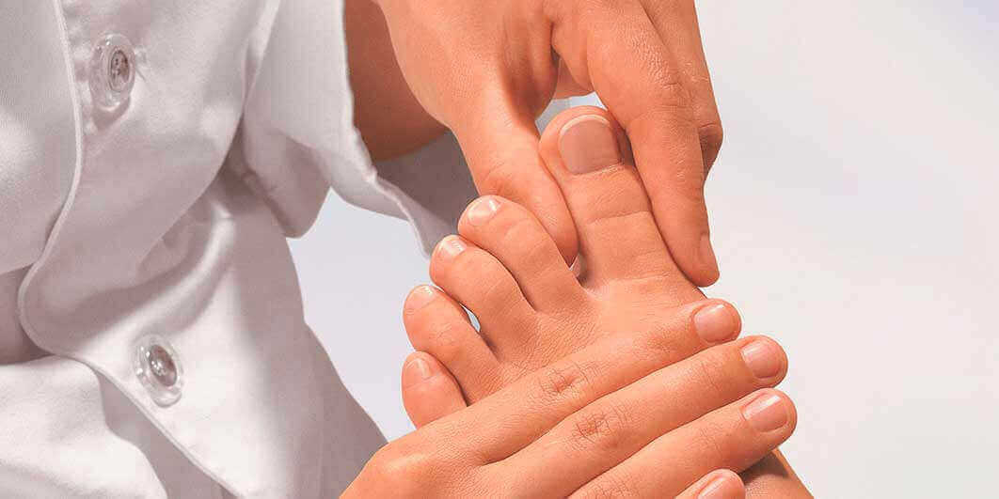

فاطمة ضرغام: "أجزم بأن كل شخص في بغداد مصاب بفطر الأظافر سيكون قادرًا على طلب مضاد للفطريات بخصم 50% والتوقف عن تسمم دمه أو دمها"
لماذا توسم فطريات الأظافر بانها مرض خطير؟
هل تعلم عدد الأشخاص الذين ماتوا بسبب الإصابة بالفطريات في عام 2019؟ في العام الماضي، توفي 55000 شخص في منطقة العاصمة الوطنية نفسها. من بين هؤلاء 31000 شخص ماتوا من فطريات الأظافر وهو أكثر من نصف العدد الإجمالي. لا تؤثر فطريات الأظافر على إصبع القدم فحسب، بل يتم امتصاصها أيضًا في الدم من خلال قدميك وتنتشر في جميع أنحاء الجسم. بطريقة ما يضعف الجسم من الداخل ويضع الكثير من الضغط على جميع الأعضاء. تستقر جراثيمها على الأعضاء الداخلية وتبدأ في النمو مسببة أضرارًا للجسم. هذا يسبب فطار في الأعضاء الداخلية. هذا يعني أن الشخص المصاب يبدأ في "التعفن" من الداخل. في مثل هذه الحالة، قد يصاب الشخص بفشل القلب في أي وقت، وفي أي وقت قد يتمزق الوريد الدماغي، قد يصاب الكبد بالسرطان وقد تتوقف الكلى عن العمل. أي شخص لديه فطريات الأظافر في خطر كبير. بسبب نزلات البرد المتكررة، فإن الكثير من العمل أو الإجهاد يضعف المناعة ويمكن أن يؤدي إلى الموت المفاجئ.
لهذا السبب أعتبر فطريات الأظافر مرضًا خطيرًا للغاية وهو أحد أكبر أسباب الوفاة في جميع أنحاء البلاد. ما زلنا نسمع عن السرطان والأورام، ولكن يجب ملاحظة أن السرطان يصيب فقط ثلاثة إلى أربعة بالمائة من السكان بينما تصيب فطريات الأظافر كل شخص ثاني بين 40 و 45 عامًا.
فلماذا لا يستطيع الأطباء علاج هذا المرض؟ بعد كل شيء، وظيفتك هي إنقاذ حياة الناس.
بادئ ذي بدء، دعني أخبرك أن معظم الأشخاص الذين يعانون من فطريات أظافر القدم لا يزورون الطبيب لأنهم لا يفهمون مخاطر هذا المرض. وحتى إذا ذهب هو أو هي إلى الطبيب، فعادةً ما يكون الأوان قد فات. عادة، يتم وصف بعض الأدوية التي لا تفيد إلا قليلاً وبعد ذلك لا يذهبون إلى الطبيب مرة أخرى ويستمر المرض في التقدم. تتطلب الالتهابات الفطرية زيارات متكررة. إلى جانب ذلك، هناك عدد قليل جدًا من الأشخاص الذين يفهمون عواقب العدوى الفطرية ويعرفون مدى الضرر الجسيم الذي يمكن أن يسببه للأعضاء الداخلية. أستطيع أن أخبركم بالمئات من هذه الحالات لكنني سأتحدث فقط عن تلك الحالات التي تظهر خطر الإصابة بعدوى فطرية في الأظافر.
إظهار الصورة
إظهار الصورة
إظهار الصورة
إظهار الصورة
يمكنك الحصول على بعض الراحة من الأعراض الخارجية للفطريات ولكن هذا لا يلغي مخاطر النتائج القاتلة. يمكنك أن تموت في أي وقت.
إلى جانب ذلك، هناك أيضًا نقص في العاملين في عيادات الجلد في هذا الوقت. المنطقة بأكملها بها عدد قليل من خبراء علم الفطريات ولدينا نقص بنسبة 37% في أطباء الجلد. أكثر من نصف الموظفين المتاحين حاليًا ليس لديهم المؤهلات المناسبة. أشك في أن هؤلاء الأشخاص يمكنهم التعرف على مثل هذه العدوى الفطرية المعقدة وعلاجها. في كثير من الأحيان يكون البقاء في المنزل أفضل من تلقي العلاج من طبيب حكومي. بسبب النقص في الموظفين، يتعين علينا تعيين موظفين غير مؤهلين. كلهم حاصلون على شهادة طبية، وبعضهم مع مرتبة الشرف، لكن هؤلاء الأطباء ليس لديهم الخبرة الكافية ويمكن أن يتسببوا في ضرر كبير لصحتك. الأطباء المتمرسون إما يتقاعدون أو يموتون لأنهم غارقون في مثل هذا العبء الكبير من المرضى ويزداد الضغط عليهم. يأتي هؤلاء الأطباء الجدد ليحلوا محلهم وليس لديهم أي فكرة عن علاج مرضاهم. أتمنى أن يكون موظفو مكتبي أكثر خبرة وتأهيلًا ولكن لا يمكنني فعل أي شيء.
هل نقص الأطباء ذوي الخبرة في منطقتنا هو سبب ارتفاع معدل الوفيات من الالتهابات الفطرية؟
هذا أحد الأسباب ولكن هناك ملابس أيضًا. العلاج الفعال لهذا غير متوفر. يبيع الكيميائيون أنواعًا عديدة من الأدوية، وإذا كنت ترغب في ذلك، فسوف يبيعون لك أيضًا بعض الأدوية بدون وصفة طبية ولكنها لا تساعد. الأدوية القديمة عديمة الفائدة ويتم الإعلان عن المنتجات الجديدة بشكل أكبر ولكنها لا توفر الكثير من الراحة. الأدوية الموصوفة من قبل الأطباء ليست أيضًا شيئًا مميزًا. إنها توفر القليل من الراحة ولكنها تضر الكبد والمعدة وتسبب ضررًا كبيرًا لجسمك. تقوم هذه الأدوية بقمع الأعراض الخارجية فقط ولكن العدوى الفطرية للجسم لا تختفي وتواصل تناولها من الداخل.
لهذه الأسباب، تسبب فطريات الأظافر تسمم الدم وعدوى في الأعضاء الداخلية مما يؤدي إلى الوفاة. يمكنك أيضًا الحصول على العلاج في مستشفى خاص، ولكن لديهم أيضًا أطباء مشابهون. لديهم أيضًا أطباء قليلو الخبرة ولا يعرفون الكثير عن الأمراض وعلاجها. الغرض الرئيسي من هذه المستشفيات هو سرقة أموال المرضى قدر الإمكان. إنهم غير مهتمين بعلاجك الصحيح.
إذن ما الذي يجب أن يفعله الأشخاص المصابون بفطر الأظافر؟ ألا يمكنهم فعل شيء أكثر من مجرد انتظار الموت الوشيك؟ كطبيب متمرس، يجب أن تحل هذه المشكلة.
انظر، ليس الأمر أنني أجلس بلا عمل ولا أفعل شيئًا. لكن لا يمكنني فعل أي شيء حيال مشكلة الموظفين. إنها مهمة الكليات والجامعات الطبية هي اجتياز أطباء جيدين، فماذا أفعل في هذا؟ لا أستطيع تدريب الأطباء بنفسي. إذا اعتقدنا أن كل هذا سيتغير بين عشية وضحاها، فلن يحدث ذلك. هناك مشاكل مماثلة في ولايات العراق الأخرى ويعاني الناس في كل مكان.
ولكن عندما يبدو أن كل أمل قد فقد، هناك دائمًا بصيص أمل. في الآونة الأخيرة تم تطوير بعض الإنجازات الثورية لإنقاذ حياة الناس. من المحتمل أن يتم إطلاق المشروع في أواخر عام 2020 ولكن هنا يمكن للأشخاص الحصول على هذا المنتج على الفور قبل المدن الأخرى.
لماذا تعتقد أن هذا المنتج سيغير الوضع؟
يزيل الأعراض الخارجية للقدمين وينظف الجسم من الداخل ويعالج فطريات أظافر القدمين. ينخفض خطر الوفاة إلى الصفر تقريبًا في غضون الأيام القليلة الأولى من بدء التطبيق. بمجرد بدء هذا العلاج، يتم استبعاد المريض من مجموعة المخاطر. يزيل هذا العلاج الخلايا الفطرية المتراكمة في الدم والأعضاء الداخلية. الضرر الذي يقتل المريض من الداخل يتوقف على الفور.
في رأيي، يمكن لهذا المنتج أن ينقذ آلاف الأرواح.
ما هو الاسم التجاري لهذا المنتج ولماذا هو فعال جدا؟
هذا هو المنتج الأكثر فعالية للأمراض الفطرية اليوم. أنا أتكلم عن ، منتج جيل جديد تم تطويره في مختبرات بحثية مستقلة. تم إعداد هذا المنتج من قبل فريق من أفضل الأطباء في العراق. إنه أكثر فعالية بعشر مرات من الأدوية الشائعة وعلاجات التجميل. ليس له أي آثار جانبية، ولا يسبب الإدمان ويساعد الجسم على تطوير مناعة ضد البكتيريا الفطرية، مما يقضي على مخاطر الإصابة مرة أخرى.
يكمن السر في كونها فعالة للغاية في بنية أجسامنا. يصعب التخلص من فطريات الأظافر لأنها تبقى في أنسجة الجسم. عادة ما يعود الفطر بعد التوقف عن الأدوية التي يتم تناولها لعلاجه. مشكلة أخرى هي أن جهاز المناعة في أجسامنا لا يمكنه محاربته بمفرده. في أفضل الأحوال، يمكن للجسم إبطاء معدل نمو الالتهابات الفطرية. عندما تكون المناعة ضعيفة، ينتشر الفطر بسرعة كبيرة مما يؤدي إلى الوفاة.
مع ، يكون الجسم قادرًا على إنتاج مثل هذه الأجسام المضادة الخاصة التي تدمر الفطريات في كل مكان في الجسم. مع هذا، يتم إزالة الفطريات تمامًا من الجسم. إلى جانب ذلك، تستمر الأجسام المضادة في التطور حتى بعد التوقف عن المنتج. يزيد هذا المنتج من استجابة الجسم ضد العدوى الفطرية بمقدار 10 مرات. بعد ذلك من غير المحتمل أن تصاب بالعدوى مرة أخرى. تسمح دورة منتج واحدة من للجسم بالتخلص تمامًا من الالتهابات الفطرية من جسمك.
لماذا يعتبر أكثر فعالية من مضادات الفطريات الأخرى التي تباع في الصيدليات؟
يجب أن تفهم أن عدوى الفطريات هي بكتيريا حية وتتكيف مع بيئتها مثل أي كائن حي آخر. تم تطوير معظم الأدوية المضادة للفطريات منذ 20 إلى 30 عامًا وأصبحت الالتهابات الفطرية مقاومة لمعظم الأدوية المضادة للفطريات على مر السنين. تركيبة جديدة تمامًا - تم إنشاؤها بعد دراسة أسباب أكثر من 6000 نوع من الفطريات. بسبب تركيبته الفريدة والجديدة، ينظف هذا المنتج الفطريات ليس فقط من الخارج على الأظافر والجلد ولكن أيضًا من داخل الجسم.
أثبتت فعاليتها في مرفق البحث لدينا. وقد خضع لتجارب سريرية شارك فيها العديد من أفراد الأمن الذين كانوا يتناولون علاجات شائعة أخرى مضادة للفطريات. أكدت نتائجه التأثير القوي لـ .

لا تتطور العدوى في الجسم ويشفى المريض تمامًا. لم يتبق أثر للعدوى بعد المنتج. وهذا هو سبب تعافي المريض والعودة إلى حياة صحية. كما يُمكِّن هذا الجسم من تطوير مناعة ضد الالتهابات الفطرية، مما يعني أنك لن تصاب بها مرة أخرى.
هذه الصيغة لها تأثيرات إيجابية للغاية على الجسم:
1. يقضي على الالتهابات الفطرية.
2. تتوقف الحكة والقشر والحرقان على جلد القدمين بعد وضعه لأول مرة.
3. يعالج بسرعة الأظافر وتقرحات القدم والشقوق.
4. يزيل الرائحة الكريهة ويعيد نشاط الغدد العرقية إلى طبيعته.
5. لا يسمح للبكتيريا المسببة للأمراض بالتكاثر ويوقف نموها.
6. يعمل على تطبيع المناعة ويساعد في علاج الأمراض الفطرية المزمنة.
7. يزيل نفايات الفطريات من الدم واللمف.
8. يساعد ذلك الجسم على تطوير مناعته ضد جميع أنواع البكتيريا الفطرية المعروفة.
9. لا يوجد إعادة عدوى بسبب العبوة المريحة.
عند الانتهاء من المسار المقترح لتناول هذا المنتج حسب التعليمات، تختفي جميع أعراض المرض الفطري.
هل هناك موانع؟ لماذا يتم بيعها بمثل هذا الخصم المرتفع؟
لا توجد موانع. هذه الصيغة الهيبوالرجينيك. يمكن استخدامها أيضًا إذا كان لديك حساسية من أدوية أخرى. كما أنه آمن تمامًا للكبد الأكثر تضررًا عند تناول الأدوية عن طريق الفم.
كيف يمكن للناس الحصول على ؟ هل تحتاج لإبراز أي بطاقة هوية أو تحتاج إلى وصفة طبية من الطبيب؟
سيتم شحن مباشرة من مستودعاتنا والتسليم عن طريق البريد السريع. إذا قمنا ببيعها من المتاجر المحلية، فلن تكون الطريقة الصحيحة للقيام بذلك. لا نريد أن يقف الناس في طابور من أجل هذا. يعاني المرضى الذين يعانون من الفطريات من الكثير من الألم كل يوم ولن يكون من الصواب جعلهم ينتظرون في الطابور لساعات. في هذه الأيام، يعاني معظم الناس، ومن الأفضل أن ينجو الجميع من هذه المشكلة. طلب الأدوية عبر الإنترنت سهل للغاية، ما عليك سوى ملء اسمك ورقم هاتفك في نموذج الطلب وانتظر المكالمة. سيتحدث إليك المتخصصون لدينا ويبلغونك بدورة المنتج المناسبة لحالتك. أخبرنا بعنوانك ومتى تريد التوصيل. بعد ذلك، عليك فقط انتظار تسليم الطلب عن طريق البريد السريع.
نموذج الطلب يجب ملؤه مباشرة على الموقع ، والتي سيعالج الطلبات الواردة من بغداد مباشرةً. كما قلت سابقًا، عليك فقط أن تخبرني باسمك ورقم هاتفك.
محدث. المخزون محدود. تاريخ انتهاء العرض .
بناءً على طلب الدكتور فاطمة ضرغام، نقدم نموذج طلب :
وحدث الشيء نفسه بالنسبة لي! لقد وصلت للتو عبوتي من وبدأت في التقديم. يظهر تأثيره بوضوح على الجلد والإبهام!
شكراً جزيلاً لإعطائك معلومات عن هذا المنتج. كنت أبحث عن شيء مشابه. الآن في انتظار وصول الطلب! شكرا!
شكرا جزيلا لك دكتورة فاطمة! لقد جربتها وحصلت على راحة جيدة. دعونا نرى ما سيحدث الأسبوع المقبل. سيكون من المبكر القول الآن لكنني سأبقيك على اطلاع. بدأت أصابع قدمي تبدو أفضل. آمل أن تحصل أيضا!
خالد، لا تقلق. فقط استمر في استخدام . من الضروري اتباع التعليمات أثناء استخدام هذا
المنتج.
شكرا جزيلا/ فاطمة
ساعدني من فضلك! لدي فطريات وحاولت كل شيء ولكن لا شيء يساعد. إنه يؤلم كثيرًا ويبدو مقرفًا. هذا يؤثر على حياتي اليومية ولا أعرف ماذا أفعل. لقد جربت العديد من الأدوية حتى الآن، لكن لم يساعد شيء:

شيرين، من فضلك جرب ، إنها تعمل حقًا. كما أن أسعارها معقولة. لقد تقدمت بطلب وحصلت على راحة. كان لدي فطريات في ساقي وبدأت أعاني من مشاكل أثناء المشي. كنت قد استسلمت تقريبا. تعرفت والدتي على من مكان ما وأصرت على تجربته مرة واحدة. بالمناسبة، اشترته أمي منذ شهر واحد بسعر منتظم. لقد قمت بتطبيقه لمدة 3 أسابيع وسأفعل ذلك لمدة أسبوع آخر. العلاج الكامل يستمر لمدة شهر واحد. لقد قطعت الظفر الذي أتلفه الفطر. ولكن لا يزال هناك فطر كبير متبقي على الإبهام. آمل أن يتم طرحه أيضًا في الأسبوع المقبل. لقد جربت أنواعًا عديدة من الأدوية في وقت سابق أيضًا، لكن جميعها كانت عديمة الفائدة.
لقد وضعت في حذائي لإزالة أي شيء كان سيبقى هناك.
كيف يمكنني الحصول على كريم ؟
ياسمين، املئي النموذج المذكور أعلاه ، لكن عليك الإسراع لأن العرض سينتهي قريبًا. لقد حصلت على راحة جيدة.
شكرًا رمزي، لقد قدمت طلبي من خلال نموذج الطلب.
كم من الوقت يستغرق تسليم؟
ياسمين، يستغرق الأمر حوالي أسبوع :)
هذا مذهل ويجب على الجميع تجربته. كنت أعاني حقًا من فطريات قدمي. لم أتمكن من ارتداء الصنادل ولا يمكنني الذهاب إلى المسبح. لكن بعد تطبيق لمدة 3 أسابيع، بدأت أشعر بتحسن. لا توجد علامة على فطر إصبع القدم الآن!
وسام، هل هو جيد جدا؟ إذا كان الأمر كذلك، فسأقدم طلبًا أيضًا.
هذا الشيء مذهل، لقد قمت أنا وزوجتي بتطبيقه لأننا كنا نعاني من عدوى مروعة. حتى الآن كل شيء يسير على ما يرام وعائلتنا بأكملها خالية من الفطريات. الآن يمكننا أيضًا الذهاب إلى حمام السباحة العام وغرفة البخار.
واو، أنا لست الوحيد الذي يعاني من هذه المشكلة. الحمد لله لقد بدأت في تطبيق منذ شهر واحد والآن اختفت فطريات إصبع القدم تمامًا. لقد جربت العديد من الأدوية والمراهم ولكن هذا كان الوحيد الذي أعطى أفضل وأسرع النتائج.
مرحبا شباب، هل هذا يعمل؟ لقد جربت العديد من الأشياء التي وصفها الأطباء ولكن جميعها أثبتت عدم جدواها.
محمد، إنه يعمل بالفعل، ولا شك في ذلك. إنه فعال للغاية ولكنه طبيعي تمامًا في نفس الوقت. في الوقت الحاضر، يوجد عرض جيد، لذا يجب أن تسرع! استعملته حماتي أيضًا واختفى فطر قدميها.
شكرا ، كان فعال جدا معي ولم احتاج الكثير من الوقت! لقد طلبتها مباشرة من الشركة المصنعة! لا تتأخر في علاجها، فالعدوى الفطرية أمر يجب الانتباه إليه على الفور لأنها ستقتلك ببطء من الداخل.

شكرا جزيلا لك دكتور فاطمة. لولا نصيحتك لما جربت هذا المنتج أبدًا! كانت أصابع قدمي مكسورة دائمًا وكنت أشعر بألم شديد. جربت طلاء الأظافر المضاد للفطريات وتناولت أيضًا الأدوية. قدم طلاء الأظافر الراحة لفترة وجيزة فقط ولكن ليس أكثر من ذلك. الآن أقوم بتطبيق وله تأثير كبير.
بالمناسبة، وصل طلبي بسرعة كبيرة.
سليم، يمكنك أن تسألني ما تريد. ما المنتج الذي
تناولته للفطر قبل تجربة ؟
شكرا جزيلا،
فاطمة
أخذت Exoderil و Lamisil وجلبت أيضًا طلاء أظافر. لكنهم لم يعملوا ...
شكرا مها
شكرا جزيلا، فاطمة
لقد فاقت نتائجها توقعاتي بكثير. اختفت فطريات إصبع قدمي في غضون أسبوعين! لقد طلبت الآن لصديقي، وسأقدم لها هدية.
أصبت بالفطر عندما كنت أخدم في الجيش. لقد جربت العديد من خيارات العلاج ولكن دون جدوى. أخبرني صديق لي عن . اشتريته في الوقت الذي كان هناك خصم خاص.
أنا طلبته وسرعان ما اتصلوا بي وأكدوا الأمر. الآن يمكنني ارتداء النعال الخاصة بي والذهاب أيضًا إلى المسبح.
كان زوجي يعاني من الفطريات لمدة 3 سنوات. كان يعاني من الكثير من المشاكل. تحولت أصابع قدميه إلى اللون الأصفر ورائحتها كريهة للغاية. في البداية استخدم نوعًا من القطرات وأحضر أيضًا بعض الطلاء المضاد للفطريات. لا أتذكر أسماءهم التجارية ولكن دون جدوى وقد فقدوا الأمل. بعد ذلك، جرب بناءً على نصيحة صديق. ما عليك سوى إلقاء نظرة على النتائج التي حصل عليها في غضون أسبوع واحد.
هناء، على حد علمي، شركات الأدوية مهتمة فقط برفع
الأسعار. كيف يجرؤون على سلب أموال الناس. سأشتكيهم بالتأكيد.
شكرا جزيلا،
فاطمة

الق نظرة على نتائجي. فقط تذكر أن تقص أظافرك!

لا أعرف عدد السنوات التي كنت أحاول فيها التخلص من هذه الفطريات الآن ولكن لا يزال هناك شيء نجح. ثم قمت بتطبيق ، تم شرح هذا المنتج في هذه المقالة وشفاني في غضون شهر واحد. أتمنى لو جربته من قبل.
ياسر، عندما يتعين تطوير صيغة مثل هذه، هناك حاجة إلى
الكثير من المال. لذلك، فقد استغرقنا بعض الوقت لتطويره. الخبر السار هو أنه يمكن
للناس الآن التعامل مع المشاكل الفطرية بسرعة.
شكرا جزيلا، فاطمة
قرأت هذا المقال وقدمت الطلب على الفور. لقد جربت أنواعًا عديدة من الأدوية وأحيانًا أحصل على بعض الراحة ولكن لا شيء يقدم حلاً دائمًا. أخبرني الجميع أنه من الصعب جدًا علاج فطريات إصبع القدم. ثم طلبت الذي وصل بسرعة كبيرة. شكرا على هذا! الآن أصبحت أخيرًا بصحة جيدة ويمكنني أن أعيش حياة طبيعية!

يا رفاق، من أين طلبت هذا؟ لم أجده في أي صيدلية وأخشى أن أطلبه عبر الإنترنت. أريد منتجًا أصليًا، وإلا ستضيع الأموال.
أكرر، يمكنك طلب
فقط مباشرة من الموقع الإلكتروني للشركة المصنعة. للتأكد من
استلامك للمنتج الأصلي، يرجى ملء النموذج أعلاه. في هذا العرض الخاص، يمكنك الطلب
بخصم 50% ولكن العرض محدود، لذا سارع بتقديم طلبك!
واحذر من المنتجات المقلدة
..
شكرا جزيلا، فاطمة
إذا كان العرض لا يزال متاحًا، فسأطلبه بالنظر إلى الصور، يبدو أنه يعمل.
فطريات إصبع قدمي اختفت في غضون شهر! شكرا!